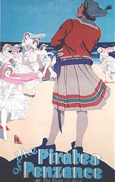
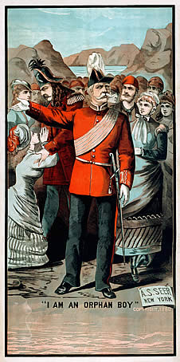

You are here: > The Pirates of Penzance

After the sensational success of H.M.S. Pinafore, many American performing companies presented unauthorized versions of that opera. Gilbert, Sullivan and Carte decided to prevent that from happening again by presenting official versions of their next opera, The Pirates of Penzance, or The Slave of Duty simultaneously in England and America. The opera premiered on December 31, 1879 at the Fifth Avenue Theater in New York with Sullivan conducting, but a single performance had been given on the previous day at the Royal Bijou Theatre, Paignton, England, to secure the British copyright. Finally, the opera opened on April 3, 1880, at the Opéra Comique in London, where it ran for 363 performances, having already been playing successfully for over three months in New York.
On December 10, 1879, Sullivan had written a letter to his mother about the new opera, upon which he was hard at work in New York. "I think it will be a great success, for it is exquisitely funny, and the music is strikingly tuneful and catching." True enough! The Pirates of Penzance was an immediate hit and takes its place today as one of the most popular and enduring works of musical theatre.
In The Pirates of Penzance, Frederic was as a child apprenticed to a band of tenderhearted, orphaned pirates by his nurse who, being hard of hearing, had mistaken her master's instructions to apprentice the boy to a pilot. Frederic, upon completing his 21st year, rejoices that he has fulfilled his indentures and is now free to return to respectable society. But it turns out that he was born on February 29 in leap year, and he remains apprenticed to the pirates until his 21st birthday. By the end of the opera, the pirates, a Major General who knows nothing of military strategy, his large family of beautiful but unwed daugters, and the timid constabulary all contribute to a cacophony that can be silenced only by Queen Victoria's name.
INTRODUCTION
- Introduction adapted from the book "Tit-Willow or Notes and Jottings on Gilbert and Sullivan Operas" by Guy H. and Claude A. Walmisley
- Plot Summary From Henry Lytton's Secrets of a Savoyard
THE WORDS
- Libretto: Text [55KB], Zipped Word [39KB] or PDF [146KB] versions.
- An Analytical Edition of the Libretto prepared by Ian Bond. Colour coding is used to identify material from three different editions of the libretto. Available as a zipped Word Document [52KB] or in PDF Format [310KB]. See also a critical commentary on this libretto by Marc Shepherd.
- Libretto, illustrated by Russell Flint in "Savoy Operas" [from the Internet Archive]
- Glossaries
- The Gilbert and Sullivan Archive Glossary,
- Benford's Gilbert and Sullivan Lexicon at GSOpera.com
- From the book Titwillow by Guy and Claude Walmisley
- Two D'Oyly Carte prompt books for early productions have been digitised and can be downloaded as PDF files:
Engraving by M. Stretch from The Illustrated Sporting & Dramatic News, June 26th 1880. Click to enlarge. | THE MUSIC
|

RECORDINGS
- 1929 HMV D'Oyly Carte Recording [from the Internet Archive]
- 1949 Decca D'Oyly Carte Recording [from the Internet Archive]
- 1957 Decca D'Oyly Carte Recording [from the Internet Archive]
EARLY PERFORMANCES
- First Night Casts
- Programmes from the original London production and the second revival at the Savoy Theatre.
- Reviews:
- From The Times and various nineteenth century newspapers and periodicals.
- Other reviews from the Savoy Opera Review site.
- Description of Gilbert rehearsing Pirates in Philadelphia in 1880.
|
ILLUSTRATIONS
BACKGROUND
|  Download a printable version. |

ADAPTATIONS
- Di Yam Gazlonim is Al Grand's Yiddish adaptation of The Pirates of Penzance. The New York based Folksbiene Yiddish Theatre’s production received a 2007 NY Drama Desk nomination in the Outstanding Revival of a Musical category.
- Les Pirates de Penzance is a translation into French by François-Xavier de Villemagne. It was (will be?) first performed in May 2026, and the translated text is freely available under the Licence Art Libre.
Page Updated 24 July 2015.